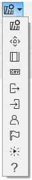
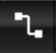

HMI - Canvas
Canvases represent the user interface for your HMI solution. They are organized in a hierarchical topology, which builds the navigation concept through the GUI (Graphical user interface). The buttons which are used for navigation within the topology, for user login or switching to another language etc., are included in the Start Canvas, and they only have to be defined once.
Canvases contain the elements to control and parameterize the finished project.
Canvases include several coding and styling elements:
-
Static graphic elements and controls (circle, rectangle, labels, lines, bitmaps, and so forth)
-
Dynamic elements of the Graphics container
-
CAT symbols from the CAT instances tree
-
.Net framework for customization
Creating the Resolution
To create new canvases, first create the resolution. In the Solution Explorer, right-click on node Canvases then select New Resolution. The Start Canvas wizard opens and leads you through the process.
Within the resolution you create canvases by right-clicking on a resolution then selecting New Item.
One resolution may contain several canvases, and the canvases of one resolution share the same Start Canvas. For a physical description, refer to the topic Start Canvas.
Right-click on a resolution to open a context menu with the following commands:
|
Command |
Description |
|---|---|
|
New Item |
Creates a new Canvas, as in New Item... |
|
New Topology |
Creates a new topology within the node, to separate canvases. For information how to test canvases arranged in the topology, refer to the HMI - User Guide topic Operating the EcoStruxure Automation Expert - HMI Client in the section CanvasTopologyStartConfigEditor. |
| Rename |
Renames current node (resolution). |
|
Remove |
Removes current node. The structure will be removed, and the canvases contained in this node will be moved to node 'Without resolution'. Remove is only available if there are more than one resolutions created in the project. |
| Startup Canvas |
Defines which Canvas is opened first when starting the HMI. It opens a list box. |
|
|
Starts the Test HMI, which is described in the HMI - User Guide topic Operating the EcoStruxure Automation Expert - HMI Client. |
| Open Start Canvas |
Opens Start Canvas to edit it within a tab in EcoStruxure Automation Expert - Buildtime. |
| Redefine Start Canvas with Wizard |
Opens Start Canvas dialog to modify the logo wizard supported. (see Start Canvas Logo). |
| Help |
Opens context help. |
New Item
This command opens the Canvas Definition page of the File Wizard with the following settings:
|
Setting |
Description |
|---|---|
| Name |
Name of the canvas. This canvas name has to follow few rules:
|
| Title |
Title displayed in Canvas in topology button. |
| Tooltip |
Tooltip shown in the opened HMI by touching the canvas title with the cursor. |
| Width |
Width of Canvas, shows the resolution width. This value can only be defined while creating the resolution. |
| Height |
Height of Canvas, shows the resolution height. This value can only be defined while creating the resolution. |
After the canvas is created the editor opens to show an empty grey workspace. On this workspace, elements can be designed (toolbar on the upper edge of the editor) or placed by drag and drop (from node CAT Instances/... (Hardware, Application, etc.) within the Solution Explorer). For that purpose the Canvas Editor is used, which opens by a double-click on the canvas in the Solution Explorer.
To test the completed canvas use the context menu entry  Start Local HMI by right-clicking on the relevant resolution within the node Canvases.
Start Local HMI by right-clicking on the relevant resolution within the node Canvases.
Start Canvas
The Start Canvas contains the symbols and adjustments necessary to control the canvases and navigate between canvases, users or languages. It is the central access point to the canvases of this resolution and may contain a company logo or information that is constantly required, independently of the currently active canvas.
Each resolution in a project may have different Start Canvases, but all canvases of one resolution share the same Start Canvas.
To edit the Start Canvas, right-click on the relevant resolution within the node Canvases in the Solution Explorer and then click on entry Open Start Canvas (as described above at Canvas) to open it in the editor.
The default controls available on the start canvas toolbar are selected when creating the resolution.
The following navigation control bar styles are supported:
-
(None):
The start canvas does not contain any navigation buttons.
-
Breadcrumb
The user can press buttons arranged horizontally across the toolbar to navigate between canvases. This topology saves space on devices with small screens.
-
Rose
The user can navigate between canvases with the arrows, or press the Home button to display a tree view of all canvases.
NOTE: This option is not available for Multi-OS HMI projects.
The buttons for User Management and language selection in the right part of the Start Canvas and the display field of the current user will be displayed in the HMI only if the relevant functionality is used in the project.
The buttons, which are used for that purpose, can be found in the toolbar, in the sub menu of the icon WorkArea Control to use them in other places, or if they have been removed erroneously from the Start Canvas:

A description of these elements is located at Graphic Editors.
In the right part of the Start Canvas and at the left of the button for User Manager, there is the Runtime Connection button. It shows the devices connected to solution and their status. Depending on that and the current theme, the aspect of the button will change:
| At least one device is connected | All the devices are disconnected | |
| Default theme |
 |
|
| Light theme |